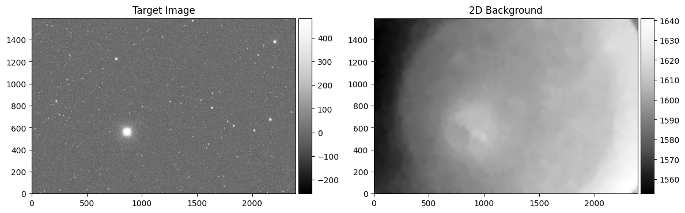
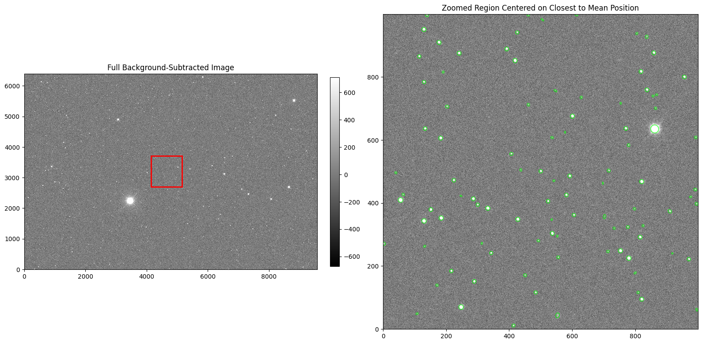
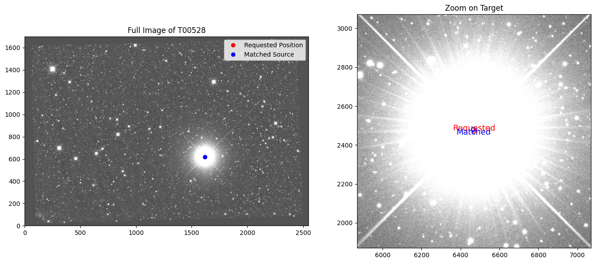
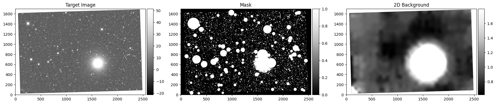

Aperture Photometry
1. Load Data
The DataBrowser class allows us to query and filter our synced data. Here we’ll explore the available keys and their values to understand what data we have access to.
Let’s filter our data to find specific images. We’ll search for:
Target: T00528
Telescope: 7DT16
Filter: r-band
Pattern: Files ending with
*100.fits
[1]:
from ezphot.utils import DataBrowser
dbrowser = DataBrowser('scidata')
dbrowser.objname = 'T00528'
dbrowser.telname = '7DT16'
dbrowser.filter = 'r'
target_imgset = dbrowser.search('*100.fits', return_type = 'science')
target_imglist = target_imgset.target_images
[INFO] Found 90 files matching '/home/hhchoi1022/ezphot/data/scidata/*/*/T00528/7DT16/r/*100.fits'
Loading Science Images: 100%|██████████| 90/90 [00:00<00:00, 97.42it/s]
[2]:
target_img = target_imglist[0]
target_img.show('coord')
[2]:
(<Figure size 800x600 with 2 Axes>,
<WCSAxes: title={'center': 'calib_7DT16_T00528_20250905_000408_r_100.fits'}>)

2. Aperture Photometry
As you did with source-extractor, you can do photometry easily.
[3]:
from ezphot.methods import AperturePhotometry
aperturephot = AperturePhotometry()
aperturephot.help()
Help for AperturePhotometry
Public methods:
- circular_photometry(target_img: Union[ezphot.imageobjects.scienceimage.ScienceImage, ezphot.imageobjects.referenceimage.ReferenceImage], x_arr: Union[float, list, numpy.ndarray], y_arr: Union[float, list, numpy.ndarray], aperture_diameter_arcsec: Union[float, list] = [5, 7, 10], aperture_diameter_seeing: Union[float, list] = [3.5, 4.5], annulus_width_arcsec: Union[float, list] = None, unit: str = 'pixel', target_bkg: Optional[ezphot.imageobjects.background.Background] = None, target_mask: Union[str, pathlib.Path, numpy.ndarray] = None, target_bkgrms: Optional[ezphot.imageobjects.errormap.Errormap] = None, save: bool = True, verbose: bool = True, visualize: bool = True, save_fig: bool = False, **kwargs)
- elliptical_photometry(target_img: Union[ezphot.imageobjects.scienceimage.ScienceImage, ezphot.imageobjects.referenceimage.ReferenceImage], x_arr: Union[float, list, numpy.ndarray], y_arr: Union[float, list, numpy.ndarray], sma_arr: Union[float, list, numpy.ndarray], smi_arr: Union[float, list, numpy.ndarray], theta_arr: Union[float, list, numpy.ndarray], unit: str = 'pixel', annulus_ratio: float = None, target_bkg: Optional[ezphot.imageobjects.background.Background] = None, target_mask: Union[str, pathlib.Path, numpy.ndarray] = None, target_bkgrms: Optional[ezphot.imageobjects.errormap.Errormap] = None, save: bool = True, verbose: bool = True, visualize: bool = True, save_fig: bool = False, **kwargs)
- photutils_photometry(target_img: Union[ezphot.imageobjects.scienceimage.ScienceImage, ezphot.imageobjects.referenceimage.ReferenceImage, ezphot.imageobjects.calibrationimage.CalibrationImage], target_bkg: Optional[ezphot.imageobjects.background.Background] = None, target_bkgrms: Optional[ezphot.imageobjects.errormap.Errormap] = None, target_mask: Optional[ezphot.imageobjects.mask.Mask] = None, detection_sigma: float = 1.5, aperture_diameter_arcsec: Union[float, list] = [5, 7, 10], kron_factor: float = 2.5, minarea_pixels: int = 5, calc_accurate_fwhm: bool = True, save: bool = True, verbose: bool = True, visualize: bool = True, save_fig: bool = False, **kwargs)
- run_photometry(target_img: Union[ezphot.imageobjects.scienceimage.ScienceImage, ezphot.imageobjects.referenceimage.ReferenceImage, ezphot.imageobjects.calibrationimage.CalibrationImage], target_bkg: Optional[ezphot.imageobjects.background.Background] = None, target_bkgrms: Optional[ezphot.imageobjects.errormap.Errormap] = None, target_mask: Optional[ezphot.imageobjects.mask.Mask] = None, sex_params: dict = None, detection_sigma: float = 5, aperture_diameter_arcsec: Union[float, list] = [5, 7, 10], aperture_diameter_seeing: Union[float, list] = [3.5, 4.5], saturation_level: float = 60000, kron_factor: float = 2.5, save: bool = True, verbose: bool = True, visualize: bool = True, save_fig: bool = False, **kwargs)
- sex_photometry(target_img: Union[ezphot.imageobjects.scienceimage.ScienceImage, ezphot.imageobjects.referenceimage.ReferenceImage, ezphot.imageobjects.calibrationimage.CalibrationImage], target_bkg: Optional[ezphot.imageobjects.background.Background] = None, target_bkgrms: Optional[ezphot.imageobjects.errormap.Errormap] = None, target_mask: Optional[ezphot.imageobjects.mask.Mask] = None, sex_params: dict = None, detection_sigma: float = 5, aperture_diameter_arcsec: Union[float, list] = [5, 7, 10], aperture_diameter_seeing: Union[float, list] = [3.5, 4.5], saturation_level: float = 60000, kron_factor: float = 2.5, save: bool = True, verbose: bool = True, visualize: bool = True, save_fig: bool = False, **kwargs)
[ ]:
target_catalog = aperturephot.sex_photometry(
target_img = target_img,
target_bkg = None,
target_bkgrms = None,
target_mask = None,
sex_params = None,
detection_sigma = 3,
aperture_diameter_arcsec = [5, 7, 10],
aperture_diameter_seeing = [3.5, 4.5],
saturation_level = 60000,
kron_factor = 2.5,
save = False,
verbose = False,
visualize = True,
save_fig = False,
)


The output will be Catalog instance, which has information about the exposure and catalog data. For more detail, see :ref:catalog
[10]:
print(target_catalog.info)
Info ============================================
path: /home/hhchoi1022/ezphot/data/scidata/7DT/7DT_C361K_HIGH_1x1/T00528/7DT16/r/calib_7DT16_T00528_20250905_000408_r_100.fits.cat
target_img: /home/hhchoi1022/ezphot/data/scidata/7DT/7DT_C361K_HIGH_1x1/T00528/7DT16/r/calib_7DT16_T00528_20250905_000408_r_100.fits
obsdate: 2025-09-05T00:04:08.000
filter: r
exptime: 100.0
depth: 18.917
seeing: 2.36567556
catalog_type: all
ra: 326.2506400247
dec: -77.26445076037
fov_ra: 1.35
fov_dec: 0.9
objname: T00528
observatory: 7DT
telname: 7DT16
aperture_diameter_arcsec: None
===================================================
[ ]:
print('exptime: ', target_catalog.info.exptime)
print('filter: ', target_catalog.info.filter)
print('telname: ', target_catalog.info.telname)
print('objname: ', target_catalog.info.objname)
print('ra: ', target_catalog.info.ra)
print('dec: ', target_catalog.info.dec)
exptime: 100.0
filter: r
telname: 7DT16
objname: T00528
ra: 326.2506400247
dec: -77.26445076037
[14]:
target_catalog.data
[14]:
Table length=4999
| NUMBER | FLUX_AUTO | FLUXERR_AUTO | FLUX_APER | FLUX_APER_1 | FLUX_APER_2 | FLUX_APER_3 | FLUX_APER_4 | FLUXERR_APER | FLUXERR_APER_1 | FLUXERR_APER_2 | FLUXERR_APER_3 | FLUXERR_APER_4 | MAG_AUTO | MAGERR_AUTO | MAG_APER | MAG_APER_1 | MAG_APER_2 | MAG_APER_3 | MAG_APER_4 | MAGERR_APER | MAGERR_APER_1 | MAGERR_APER_2 | MAGERR_APER_3 | MAGERR_APER_4 | FWHM_IMAGE | FWHM_WORLD | X_IMAGE | Y_IMAGE | XWIN_IMAGE | YWIN_IMAGE | X_WORLD | Y_WORLD | ALPHA_J2000 | DELTA_J2000 | FLAGS | CLASS_STAR | THRESHOLD | A_IMAGE | B_IMAGE | ELONGATION | ELLIPTICITY | KRON_RADIUS | FLUX_RADIUS | THETA_IMAGE | THETA_WORLD | THETA_SKY | THETA_J2000 | BACKGROUND | FLUX_MAX | ISOAREA_IMAGE | SKYSIG | SKYVAL | DETECT_THRESH | NPIX_AUTO | NPIX_APER | PIXSIZE_APER | NPIX_APER_1 | PIXSIZE_APER_1 | NPIX_APER_2 | PIXSIZE_APER_2 | NPIX_APER_3 | PIXSIZE_APER_3 | NPIX_APER_4 | PIXSIZE_APER_4 |
|---|---|---|---|---|---|---|---|---|---|---|---|---|---|---|---|---|---|---|---|---|---|---|---|---|---|---|---|---|---|---|---|---|---|---|---|---|---|---|---|---|---|---|---|---|---|---|---|---|---|---|---|---|---|---|---|---|---|---|---|---|---|---|---|---|
| ct | ct | ct | ct | ct | ct | ct | ct | ct | ct | ct | ct | mag | mag | mag | mag | mag | mag | mag | mag | mag | mag | mag | mag | pix | deg | pix | pix | pix | pix | deg | deg | deg | deg | ct | pix | pix | pix | deg | deg | deg | deg | ct | ct | pix2 | ||||||||||||||||||||
| int64 | float64 | float64 | float64 | float64 | float64 | float64 | float64 | float64 | float64 | float64 | float64 | float64 | float64 | float64 | float64 | float64 | float64 | float64 | float64 | float64 | float64 | float64 | float64 | float64 | float64 | float64 | float64 | float64 | float64 | float64 | float64 | float64 | float64 | float64 | int64 | float64 | float64 | float64 | float64 | float64 | float64 | float64 | float64 | float64 | float64 | float64 | float64 | float64 | float64 | int64 | str7 | str1 | int64 | float64 | float64 | float64 | float64 | float64 | float64 | float64 | float64 | float64 | float64 | float64 |
| 1 | 3474970.0 | 4121.366 | 2614184.0 | 3123566.0 | 3389806.0 | 3274942.0 | 3417686.0 | 3280.912 | 3645.505 | 3935.1 | 3786.016 | 3986.333 | -16.3524 | 0.0013 | -16.0433 | -16.2366 | -16.3254 | -16.288 | -16.3343 | 0.0014 | 0.0013 | 0.0013 | 0.0013 | 0.0013 | 6.81 | 0.0009596373 | 465.399 | 85.0836 | 466.1606 | 86.0496 | 323.34446643 | -77.669369721 | 323.3444664 | -77.6693697 | 4 | 0.98 | 127.2467 | 3.738 | 3.275 | 1.141 | 0.124 | 3.5 | 3.334 | 72.05 | 69.59 | 20.41 | 20.41 | 0.683493 | 74826.42 | 765 | 79.7884 | 0 | 3 | 471.1254472737662 | 76.28541073796102 | 9.855435131841535 | 149.51940504640356 | 13.797609184578148 | 305.14164295184406 | 19.71087026368307 | 209.1933791639988 | 16.32033341719403 | 345.80946351599795 | 20.983285822106605 |
| 2 | 4683292.0 | 4698.114 | 3680859.0 | 4237371.0 | 4550494.0 | 4407084.0 | 4591606.0 | 3868.563 | 4208.255 | 4488.833 | 4340.829 | 4541.944 | -16.6764 | 0.0011 | -16.4149 | -16.5677 | -16.6451 | -16.6104 | -16.6549 | 0.0011 | 0.0011 | 0.0011 | 0.0011 | 0.0011 | 5.26 | 0.0007412169 | 9107.2539 | 75.121 | 9108.3396 | 76.0409 | 329.05032246 | -77.706008552 | 329.0503225 | -77.7060086 | 4 | 1.0 | 131.1449 | 3.594 | 3.529 | 1.019 | 0.018 | 3.5 | 3.202 | -61.01 | -66.17 | -23.83 | -23.83 | 4.247592 | 77110.84 | 921 | 79.7884 | 0 | 3 | 488.1077379113834 | 76.28541073796102 | 9.855435131841535 | 149.51940504640356 | 13.797609184578148 | 305.14164295184406 | 19.71087026368307 | 209.1933791639988 | 16.32033341719403 | 345.80946351599795 | 20.983285822106605 |
| 3 | 89170.51 | 1388.597 | 79127.55 | 86329.8 | 93204.63 | 89297.84 | 94107.69 | 950.3466 | 1224.837 | 1653.531 | 1405.845 | 1749.46 | -12.3756 | 0.0169 | -12.2458 | -12.3404 | -12.4236 | -12.3771 | -12.4341 | 0.013 | 0.0154 | 0.0193 | 0.0171 | 0.0202 | 4.03 | 0.0005685684 | 8996.9189 | 33.0811 | 8997.8257 | 34.1069 | 328.97806299 | -77.712246785 | 328.978063 | -77.7122468 | 0 | 0.983 | 131.299 | 2.036 | 2.004 | 1.016 | 0.015 | 3.99 | 2.382 | 66.81 | 64.67 | 25.33 | 25.33 | 4.700016 | 4257.846 | 91 | 79.7884 | 0 | 3 | 204.0662364375781 | 76.28541073796102 | 9.855435131841535 | 149.51940504640356 | 13.797609184578148 | 305.14164295184406 | 19.71087026368307 | 209.1933791639988 | 16.32033341719403 | 345.80946351599795 | 20.983285822106605 |
| 4 | 2756657.0 | 3645.594 | 2342736.0 | 2596341.0 | 2738630.0 | 2673359.0 | 2758030.0 | 3116.256 | 3353.08 | 3599.24 | 3462.755 | 3651.51 | -16.101 | 0.0014 | -15.9243 | -16.0359 | -16.0938 | -16.0676 | -16.1015 | 0.0014 | 0.0014 | 0.0014 | 0.0014 | 0.0014 | 4.47 | 0.0006300149 | 8536.9443 | 23.8746 | 8537.9367 | 24.8449 | 328.67459584 | -77.714705528 | 328.6745958 | -77.7147055 | 6 | 0.997 | 128.0749 | 3.03 | 2.939 | 1.031 | 0.03 | 3.5 | 2.622 | -62.62 | -64.59 | -25.41 | -25.41 | 11.41325 | 72875.21 | 604 | 79.7884 | 0 | 3 | 342.71110397436064 | 76.28541073796102 | 9.855435131841535 | 149.51940504640356 | 13.797609184578148 | 305.14164295184406 | 19.71087026368307 | 209.1933791639988 | 16.32033341719403 | 345.80946351599795 | 20.983285822106605 |
| 5 | 87377.32 | 1566.148 | 67211.56 | 80716.19 | 88600.88 | 83654.29 | 89874.65 | 911.5572 | 1194.924 | 1592.146 | 1372.914 | 1658.686 | -12.3535 | 0.0195 | -12.0686 | -12.2674 | -12.3686 | -12.3062 | -12.3841 | 0.0147 | 0.0161 | 0.0195 | 0.0178 | 0.02 | 5.72 | 0.0008061111 | 8541.2021 | 7.9232 | 8542.3495 | 8.5887 | 328.67753218 | -77.716938624 | 328.6775322 | -77.7169386 | 19 | 0.918 | 128.1826 | 2.64 | 2.196 | 1.202 | 0.168 | 4.07 | 3.114 | -52.32 | -52.12 | -37.88 | -37.88 | 14.56685 | 3090.468 | 110 | 79.7884 | 0 | 3 | 301.6997524247501 | 76.28541073796102 | 9.855435131841535 | 149.51940504640356 | 13.797609184578148 | 305.14164295184406 | 19.71087026368307 | 209.1933791639988 | 16.32033341719403 | 345.80946351599795 | 20.983285822106605 |
| 6 | 1475390.0 | 2762.326 | 1260206.0 | 1404172.0 | 1478984.0 | 1445435.0 | 1487576.0 | 2325.781 | 2538.055 | 2780.725 | 2643.369 | 2833.368 | -15.4223 | 0.002 | -15.2511 | -15.3686 | -15.4249 | -15.4 | -15.4312 | 0.002 | 0.002 | 0.002 | 0.002 | 0.0021 | 4.59 | 0.0006468092 | 4741.1069 | 25.3899 | 4742.0573 | 26.3767 | 326.16186051 | -77.710687194 | 326.1618605 | -77.7106872 | 0 | 0.984 | 119.1225 | 2.873 | 2.629 | 1.093 | 0.085 | 3.5 | 2.613 | 55.51 | 54.03 | 35.97 | 35.97 | 3.94823 | 54295.38 | 407 | 79.7884 | 0 | 3 | 290.6780067665762 | 76.28541073796102 | 9.855435131841535 | 149.51940504640356 | 13.797609184578148 | 305.14164295184406 | 19.71087026368307 | 209.1933791639988 | 16.32033341719403 | 345.80946351599795 | 20.983285822106605 |
| 7 | 20022.93 | 1328.113 | 15838.0 | 19364.29 | 20521.77 | 20059.28 | 20788.85 | 750.5794 | 1028.623 | 1442.969 | 1205.866 | 1534.174 | -10.7538 | 0.072 | -10.4993 | -10.7175 | -10.7805 | -10.7558 | -10.7946 | 0.0515 | 0.0577 | 0.0764 | 0.0653 | 0.0801 | 8.7 | 0.001226384 | 1947.6616 | 24.5248 | 1948.6483 | 25.294 | 324.31558562 | -77.69268597 | 324.3155856 | -77.692686 | 0 | 0.159 | 120.7508 | 2.025 | 1.754 | 1.155 | 0.134 | 4.81 | 3.101 | 72.08 | 69.79 | 20.21 | 20.21 | -0.3824342 | 590.8799 | 48 | 79.7884 | 0 | 3 | 258.16338213746826 | 76.28541073796102 | 9.855435131841535 | 149.51940504640356 | 13.797609184578148 | 305.14164295184406 | 19.71087026368307 | 209.1933791639988 | 16.32033341719403 | 345.80946351599795 | 20.983285822106605 |
| 8 | 5965024.0 | 5121.857 | 4373238.0 | 5447238.0 | 5851234.0 | 5693215.0 | 5889262.0 | 4200.022 | 4730.053 | 4987.194 | 4869.417 | 5024.493 | -16.939 | 0.0009 | -16.602 | -16.8404 | -16.9181 | -16.8884 | -16.9252 | 0.001 | 0.0009 | 0.0009 | 0.0009 | 0.0009 | 8.95 | 0.00126119 | 327.0762 | 6.0824 | 327.8633 | 6.5563 | 323.24994345 | -77.678873355 | 323.2499435 | -77.6788734 | 28 | 0.998 | 112.1141 | 3.665 | 3.404 | 1.077 | 0.071 | 3.5 | 3.66 | 37.88 | 35.76 | 54.24 | 54.24 | 15.54534 | 77961.02 | 764 | 79.7884 | 0 | 3 | 480.11966210737944 | 76.28541073796102 | 9.855435131841535 | 149.51940504640356 | 13.797609184578148 | 305.14164295184406 | 19.71087026368307 | 209.1933791639988 | 16.32033341719403 | 345.80946351599795 | 20.983285822106605 |
| 9 | 16177.1 | 1215.76 | 12863.05 | 14804.94 | 16909.53 | 16081.89 | 17295.55 | 734.1324 | 1006.993 | 1420.154 | 1184.687 | 1511.119 | -10.5223 | 0.0816 | -10.2734 | -10.426 | -10.5703 | -10.5158 | -10.5948 | 0.062 | 0.0739 | 0.0912 | 0.08 | 0.0949 | 6.45 | 0.00090878 | 3722.0791 | 22.2937 | 3722.993 | 23.2826 | 325.48721704 | -77.706011036 | 325.487217 | -77.706011 | 0 | 0.394 | 119.1988 | 1.75 | 1.564 | 1.119 | 0.106 | 5.09 | 2.776 | 28.76 | 26.61 | 63.39 | 63.39 | -1.278709 | 623.094 | 36 | 79.7884 | 0 | 3 | 222.7718106721216 | 76.28541073796102 | 9.855435131841535 | 149.51940504640356 | 13.797609184578148 | 305.14164295184406 | 19.71087026368307 | 209.1933791639988 | 16.32033341719403 | 345.80946351599795 | 20.983285822106605 |
| ... | ... | ... | ... | ... | ... | ... | ... | ... | ... | ... | ... | ... | ... | ... | ... | ... | ... | ... | ... | ... | ... | ... | ... | ... | ... | ... | ... | ... | ... | ... | ... | ... | ... | ... | ... | ... | ... | ... | ... | ... | ... | ... | ... | ... | ... | ... | ... | ... | ... | ... | ... | ... | ... | ... | ... | ... | ... | ... | ... | ... | ... | ... | ... | ... |
| 4991 | 607708.5 | 2026.919 | 515113.8 | 577713.4 | 611449.4 | 596075.3 | 615544.5 | 1578.144 | 1787.386 | 2074.188 | 1908.331 | 2138.69 | -14.4592 | 0.0036 | -14.2798 | -14.4043 | -14.4659 | -14.4383 | -14.4731 | 0.0033 | 0.0034 | 0.0037 | 0.0035 | 0.0038 | 4.82 | 0.000678877 | 4839.167 | 5884.0903 | 4839.9402 | 5885.4598 | 326.32892914 | -76.885386734 | 326.3289291 | -76.8853867 | 0 | 0.984 | 117.7711 | 2.852 | 2.541 | 1.122 | 0.109 | 3.5 | 2.654 | -55.13 | -55.56 | -34.44 | -34.44 | -0.7860662 | 23219.36 | 294 | 79.7884 | 0 | 3 | 278.8946270702436 | 76.28541073796102 | 9.855435131841535 | 149.51940504640356 | 13.797609184578148 | 305.14164295184406 | 19.71087026368307 | 209.1933791639988 | 16.32033341719403 | 345.80946351599795 | 20.983285822106605 |
| 4992 | 149147.0 | 1374.12 | 129342.4 | 144732.1 | 153275.4 | 149121.4 | 154018.4 | 993.8237 | 1229.842 | 1591.134 | 1381.661 | 1670.758 | -12.934 | 0.01 | -12.7794 | -12.9014 | -12.9637 | -12.9339 | -12.9689 | 0.0083 | 0.0092 | 0.0113 | 0.0101 | 0.0118 | 4.74 | 0.0006675225 | 1998.8502 | 5778.1401 | 1999.7109 | 5779.3021 | 324.56312151 | -76.883849041 | 324.5631215 | -76.883849 | 0 | 0.983 | 118.5498 | 2.454 | 2.203 | 1.114 | 0.102 | 3.51 | 2.611 | -54.6 | -56.58 | -33.42 | -33.42 | 0.8413329 | 5443.322 | 138 | 79.7884 | 0 | 3 | 209.24407109913918 | 76.28541073796102 | 9.855435131841535 | 149.51940504640356 | 13.797609184578148 | 305.14164295184406 | 19.71087026368307 | 209.1933791639988 | 16.32033341719403 | 345.80946351599795 | 20.983285822106605 |
| 4993 | 4522.715 | 546.186 | 4999.807 | 4089.494 | 3977.724 | 4429.798 | 3940.126 | 723.1104 | 1001.731 | 1424.073 | 1182.504 | 1514.78 | -9.1385 | 0.1312 | -9.2474 | -9.0292 | -8.9991 | -9.116 | -8.9888 | 0.1571 | 0.266 | 0.3888 | 0.2899 | 0.4175 | 6.15 | 0.0008672432 | 1406.2003 | 5897.707 | 1407.2109 | 5898.802 | 324.20111242 | -76.862187401 | 324.2011124 | -76.8621874 | 0 | 0.436 | 120.9763 | 1.135 | 0.938 | 1.209 | 0.173 | 3.59 | 1.897 | 35.63 | 33.8 | 56.2 | 56.2 | 3.15288 | 392.1877 | 12 | 79.7884 | 0 | 3 | 43.105974707544966 | 76.28541073796102 | 9.855435131841535 | 149.51940504640356 | 13.797609184578148 | 305.14164295184406 | 19.71087026368307 | 209.1933791639988 | 16.32033341719403 | 345.80946351599795 | 20.983285822106605 |
| 4994 | 23920.11 | 1240.33 | 21144.37 | 22801.06 | 25797.73 | 23530.58 | 25809.58 | 751.7536 | 1017.661 | 1427.011 | 1191.379 | 1514.187 | -10.9469 | 0.0563 | -10.813 | -10.8949 | -11.029 | -10.9291 | -11.0295 | 0.0386 | 0.0485 | 0.0601 | 0.055 | 0.0637 | 5.57 | 0.0007856092 | 2285.0442 | 5989.7632 | 2285.9921 | 5990.8447 | 324.74757256 | -76.856282897 | 324.7475726 | -76.8562829 | 0 | 0.823 | 118.5006 | 1.937 | 1.677 | 1.155 | 0.134 | 4.77 | 2.591 | -23.45 | -25.29 | -64.71 | -64.71 | 0.6414696 | 1013.537 | 52 | 79.7884 | 0 | 3 | 232.1931022884569 | 76.28541073796102 | 9.855435131841535 | 149.51940504640356 | 13.797609184578148 | 305.14164295184406 | 19.71087026368307 | 209.1933791639988 | 16.32033341719403 | 345.80946351599795 | 20.983285822106605 |
| 4995 | 8229.453 | 1195.881 | 6314.545 | 7397.768 | 9270.208 | 7383.319 | 9191.801 | 734.8729 | 1018.825 | 1447.567 | 1200.677 | 1539.567 | -9.7884 | 0.1578 | -9.5009 | -9.6728 | -9.9177 | -9.6706 | -9.9085 | 0.1264 | 0.1496 | 0.1696 | 0.1766 | 0.1819 | 6.76 | 0.0009526712 | 1046.7087 | 5932.2144 | 1047.803 | 5933.5696 | 323.98071083 | -76.854157464 | 323.9807108 | -76.8541575 | 0 | 0.484 | 122.5373 | 1.57 | 0.816 | 1.924 | 0.48 | 7.24 | 3.241 | -56.39 | -58.74 | -31.26 | -31.26 | 1.419196 | 288.6383 | 10 | 79.7884 | 0 | 3 | 210.96811197760297 | 76.28541073796102 | 9.855435131841535 | 149.51940504640356 | 13.797609184578148 | 305.14164295184406 | 19.71087026368307 | 209.1933791639988 | 16.32033341719403 | 345.80946351599795 | 20.983285822106605 |
| 4996 | 11707.98 | 1213.778 | 8506.026 | 11048.68 | 12974.53 | 11890.34 | 12759.15 | 710.757 | 985.2302 | 1396.836 | 1160.305 | 1484.033 | -10.1712 | 0.1126 | -9.8243 | -10.1083 | -10.2827 | -10.188 | -10.2646 | 0.0907 | 0.0968 | 0.1169 | 0.106 | 0.1263 | 8.33 | 0.001174601 | 3863.8501 | 5664.209 | 3864.8941 | 5665.2304 | 325.71796853 | -76.911983744 | 325.7179685 | -76.9119837 | 0 | 0.587 | 117.3451 | 1.618 | 1.231 | 1.314 | 0.239 | 6.12 | 3.068 | -40.76 | -41.69 | -48.31 | -48.31 | -0.4803265 | 406.5421 | 24 | 79.7884 | 0 | 3 | 234.36312874092212 | 76.28541073796102 | 9.855435131841535 | 149.51940504640356 | 13.797609184578148 | 305.14164295184406 | 19.71087026368307 | 209.1933791639988 | 16.32033341719403 | 345.80946351599795 | 20.983285822106605 |
| 4997 | 19469.11 | 1099.756 | 16680.27 | 19285.18 | 18696.46 | 19132.71 | 19059.5 | 782.9484 | 1072.69 | 1506.744 | 1257.208 | 1601.253 | -10.7234 | 0.0613 | -10.5555 | -10.7131 | -10.6794 | -10.7044 | -10.7003 | 0.051 | 0.0604 | 0.0875 | 0.0714 | 0.0912 | 6.7 | 0.0009443088 | 8610.6045 | 5912.9639 | 8611.5177 | 5914.1054 | 328.67078686 | -76.885388011 | 328.6707869 | -76.885388 | 0 | 0.88 | 126.3422 | 1.84 | 1.72 | 1.07 | 0.065 | 3.99 | 2.76 | -46.99 | -46.82 | -43.18 | -43.18 | -0.8400435 | 744.8463 | 44 | 79.7884 | 0 | 3 | 158.2857921381322 | 76.28541073796102 | 9.855435131841535 | 149.51940504640356 | 13.797609184578148 | 305.14164295184406 | 19.71087026368307 | 209.1933791639988 | 16.32033341719403 | 345.80946351599795 | 20.983285822106605 |
| 4998 | 13559.4 | 1159.195 | 12035.99 | 13381.08 | 14991.75 | 13661.97 | 15471.02 | 724.6043 | 994.6836 | 1403.677 | 1168.35 | 1492.038 | -10.3306 | 0.0928 | -10.2012 | -10.3162 | -10.4396 | -10.3388 | -10.4738 | 0.0654 | 0.0807 | 0.1017 | 0.0929 | 0.1047 | 6.64 | 0.0009357748 | 5500.7568 | 5613.9233 | 5501.7271 | 5614.9605 | 326.73694632 | -76.92561058 | 326.7369463 | -76.9256106 | 0 | 0.62 | 117.7878 | 1.74 | 1.475 | 1.18 | 0.152 | 5.08 | 2.66 | -43.53 | -43.87 | -46.13 | -46.13 | 0.3810162 | 518.6997 | 33 | 79.7884 | 0 | 3 | 208.07435921659646 | 76.28541073796102 | 9.855435131841535 | 149.51940504640356 | 13.797609184578148 | 305.14164295184406 | 19.71087026368307 | 209.1933791639988 | 16.32033341719403 | 345.80946351599795 | 20.983285822106605 |
| 4999 | 24172.43 | 1200.911 | 20186.59 | 22460.34 | 25822.33 | 24241.36 | 26160.2 | 747.8528 | 1014.61 | 1421.597 | 1188.623 | 1508.834 | -10.9583 | 0.054 | -10.7627 | -10.8785 | -11.03 | -10.9614 | -11.0441 | 0.0402 | 0.0491 | 0.0598 | 0.0532 | 0.0626 | 5.12 | 0.0007212997 | 5538.0859 | 5692.2075 | 5539.0241 | 5693.2788 | 326.76112807 | -76.914689536 | 326.7611281 | -76.9146895 | 0 | 0.937 | 118.1406 | 1.853 | 1.588 | 1.167 | 0.143 | 4.87 | 2.565 | -73.14 | -73.77 | -16.23 | -16.23 | 0.36509 | 962.8569 | 46 | 79.7884 | 0 | 3 | 219.2470267521143 | 76.28541073796102 | 9.855435131841535 | 149.51940504640356 | 13.797609184578148 | 305.14164295184406 | 19.71087026368307 | 209.1933791639988 | 16.32033341719403 | 345.80946351599795 | 20.983285822106605 |
If you do not input target_bkg and target_bkgrms, this code calculate the background/RMS map as source-extractor does.
[6]:
target_catalog.show_source(
target_ra = 325.37,
target_dec = -77.393,
downsample = 4,
zoom_radius_pixel = 600,
matching_radius_arcsec = 5,
)

[6]:

[8]:
target_srcmask = target_img.calculate_circularmask(
target_srcmask = None,
x_position = 325.37,
y_position = -77.393,
radius_arcsec = 600,
unit = 'coord',
save = False,
verbose = True,
visualize = True,
save_fig = False,
)
target_srcmask = target_img.calculate_sourcemask(
target_srcmask = target_srcmask,
sigma = 5,
mask_radius_factor = 2,
saturation_level = 50000,
save = False,
verbose = True,
visualize = True,
save_fig = False,
)
target_ivpmask = target_img.calculate_invalidmask(
save = False,
verbose = True,
visualize = True,
save_fig = False,
)
---------------------------------------------------------------------------
TypeError Traceback (most recent call last)
Cell In[8], line 1
----> 1 target_srcmask = target_img.calculate_circularmask(
2 target_srcmask = None,
3 x_position = 325.37,
4 y_position = -77.393,
5 radius_arcsec = 600,
6 unit = 'coord',
7 save = False,
8 verbose = True,
9 visualize = True,
10 save_fig = False,
11 )
12 target_srcmask = target_img.calculate_sourcemask(
13 target_srcmask = target_srcmask,
14 sigma = 5,
(...) 20 save_fig = False,
21 )
22 target_ivpmask = target_img.calculate_invalidmask(
23 save = False,
24 verbose = True,
25 visualize = True,
26 save_fig = False,
27 )
File //home/hhchoi1022/code/ezphot/ezphot/imageobjects/scienceimage.py:425, in ScienceImage.calculate_circularmask(self, target_srcmask, x_position, y_position, radius_arcsec, unit, save, verbose, visualize, save_fig)
423 from ezphot.methods import MaskGenerator
424 maskgenerator = MaskGenerator()
--> 425 target_sourcemask = maskgenerator.mask_sources(
426 target_img = self,
427 target_mask = target_srcmask,
428 mask_type = 'source',
429 x_position = x_position,
430 y_position = y_position,
431 radius_arcsec = radius_arcsec,
432 unit = unit,
433
434 # Others
435 save = save,
436 verbose = verbose,
437 visualize = visualize,
438 save_fig = save_fig
439 )
440 return target_sourcemask
TypeError: MaskGenerator.mask_sources() got an unexpected keyword argument 'mask_type'
[34]:
target_bkg = target_img.calculate_bkg(
target_srcmask = target_srcmask,
target_ivpmask = target_ivpmask,
is_2D_bkg = True,
box_size = 256,
filter_size = 5,
save = False,
verbose = True,
visualize = True,
save_fig = False,
)
External mask is loaded.

[ ]: